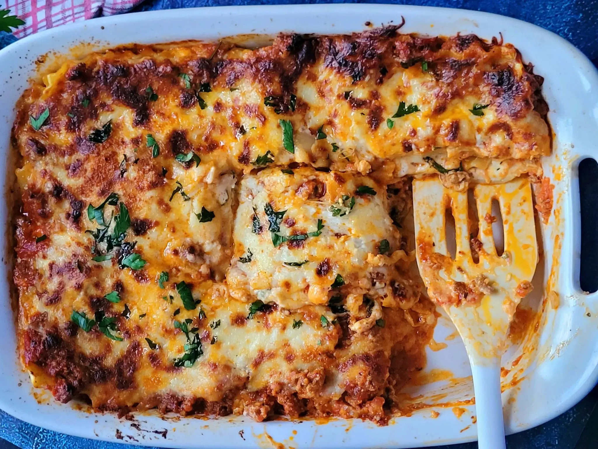

Home
Lasagna

Description
Lasagna is the ultimate comforting Italian classic,
built with layers of wide pasta sheets, rich savory
meat sauce, and a creamy cheese filling. Baked until
golden brown, the layers melt together to create a
hearty dish with crispy, caramelized edges and a
perfectly gooey center.
While it takes a bit of time to assemble, making
lasagna at home is incredibly rewarding. It is
the perfect cozy comfort food to feed a crowd or
to prep ahead of time, leaving you with amazing
leftovers that taste even better the next day.
Ingredients
- 1 lb ground Italian sausage or beef
- 1 jar (24 oz) marinara sauce
- 9 lasagna noodles (oven-ready or boiled)
- 15 oz ricotta cheese
- 2 cups shredded mozzarella cheese
- 1/2 cup grated parmesan cheese
- 1 egg (for the cheese mixture)
Steps
- Cook meat: Brown the sausage or beef in a pan, drain the fat, and stir in the marinara sauce.
- Mix cheeses: In a bowl, stir together the ricotta cheese, egg, and parmesan cheese.
- Layer: In a baking dish, layer sauce, noodles, ricotta mixture, and mozzarella. Repeat until your ingredients are used up.
- Bake: Cover with foil and bake at 375°F (190°C) for 25 minutes. Remove foil and bake 15 more minutes until bubbling.